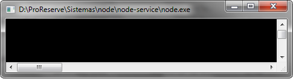
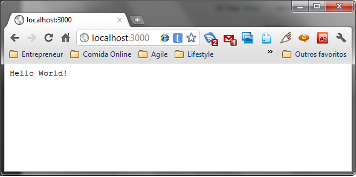
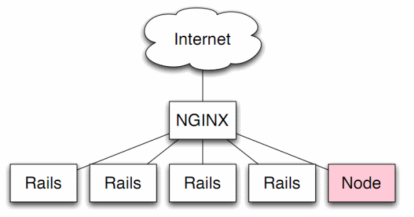
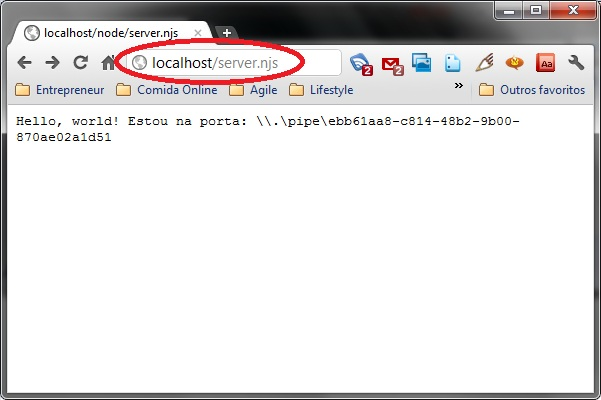
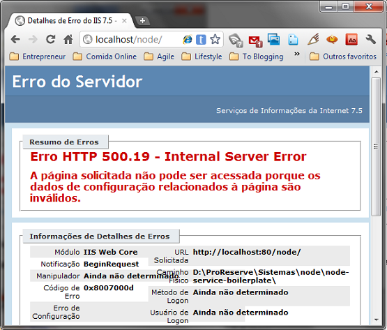

Node.js no Windows (Parte 2)
Posted on 2011-11-03 00:00:00 -0200
Para entender esse post recomendo a leitura da Parte I
Neste post continuo na saga de explicar o Node.js pelo o que ele é, mostrar suas virtudes num ambiente Windows, partindo da premissa que há muita informação sobre o Node.js na web, mas pouca explicando para nós meros mortais usuários de windows como tirar proveito de seu assincronismo.
No fim do post eu coloco alguns links com mais informações para aprofundar o estudo, enquanto isso vamos botar o Node.js na web?
Relembrando: O que é Node.js?
Node.js é um ambiente que permite executar arquivos JavaScript, usando a engine V8 do Google Chrome que é Open Source, acessando recursos externos de forma assincrona, baseado num modelo orientado a eventos, com a finalidade de criar aplicações de rede altamente escaláveis.
Um servidor web de 1 linha de código
No arquivo anterior ou mostrei que é possível executar arquivos javascript na sua maquina local, como se fossem executáveis. Com o acervo de recursos que o Node.js disponibiliza para acessar recursos externos como rede, filesystem, etc.
Crie um arquivo server.njs na sua maquina local e coloque a seguinte linha nele.
require("http").createServer(function(rq,rs){rs.end("Hello World!");}).listen(3000); Salve e se você instalou como no post Node.js no Windows: Parte 1 clique duas vezes no arquivo, senão basta executar na linha de comando a instrução abaixo:
node server.njs Ao executar abrirá um terminal console sem cursor, pois é o Node.js executando a linha de código esperando uma requisição para executar.

O receber uma requisição o servidor dispara a function que é passada como argumento da função createServer. Vamos testar isso? Abra o navegador e digite a url http://localhost:3000 e você verá a imagem abaixo.

Integrando com o legado
O código legado é geralmente uma das principais causas de dor de cabeça por desenvolvedores de software, pois sempre quando um desenvolvedor pensa nisso, lembra de acoplamento, código macarrão, falta de arquitetura, arvore de natal, imposição de limites a serem respeitados, além da integração que existe já com outras tecnologias internas e externas ao projeto.
No ambiente Windows o desenvolvimento web é cercado de tecnologias que concorrem entre si, criando um acoplamento grande, tornando inviável descartar ou mudar alguma delas, por exemplo, temos o IIS ocupando a porta 80, hospedando aplicações feitas em ASP, PHP, ColdFusion (?), .NET versões 1.0, 1.1, 2.0, 3.5, 4.0 e 5.0, além do acesso aos mais diversos banco de dados, MySql, MS SqlServer, Oracle, Access (?), etc.
O Node.js quando executa um codigo que disponibiliza um servidor ele precisa ocupar alguma porta para estar disponivel tornando a integração com algum recurso mais dolorosa, ou apenas menos elegante, pois seu servidor web utilizará a porta 80 e sua aplicação terá que usar uma outra porta qualquer, configurar firewall para liberar essa porta, esta porta estará visivel aos usuários que, dependendo da aplicação, pode gerar problemas inconvenientes, entre outros problemas.
Usar o Node.js como um servidor web é possivel, porém atualmente não é recomendado pelo criador dele, pois por mais que essa seja uma das finalidades pelo qual ele foi construido, hoje ele ainda é muito imaturo como uma solução completa, pois há muitas tarefas além de processar dados que um servidor web executa, como servir recursos estáticos como imagens, documentos, videos, ele também precisa reconhecer todos os verbos do protocolo HTTP, cookies, criptografia, HTTPS, tratar multiplos protocolos, etc.
A recomendação pelo próprio criador é ao disponibilizar o Node.js em ambiente de produção, colocar um servidor web na frente do Node.js, enquanto amadurece e surgem mais bibliotecas para suportar tudo que um Web Server precisa, assim o WebServer fica responsável por todo o trabalho pesado e o Node.js fica responsável apenas pelo processamento dos dados e da aplicação.

No Windows a infra é parecida porém mudamos o NGINX pelo IIS.

Porém ainda falta resolver um problema do Node.js no Windows, que é: Como o Node.js irá se comunicar com o IIS?
Para realizar essa comunicação entre os processos foi criado um projeto chamado IISNode criado por Tomasz Janczuk
Instalando o iisnode
Para instalar o iisnode é muito fácil, há os arquivos instaladores que facilitam todos os passos, além de serem úteis, adicionam alguns recursos no IIS.
Node.js(x86)
Instala a ultima versão do Node.js numa pasta ProgramFiles(x86|x64), servindo de base para qualquer applicação, caso você queira usar uma aplicação com outra versão do Node.js há uma opção de configuração que apresentarei mais a frente
Microsoft Visual C++ 2010 Redistributable Package (x86) | (x64)
O instalador do IIS Node não prosseguirá com a instalação caso sua maquina não posua a biblioteca de componentes do C++, se isso ocorrer aqui estão os links
iisnode for iis7 (x86) | (x64)
Aqui está o responsável que permitirá o IIS se comunicar com o Node.js. Você não precisa realmente instalar pois na arquitetura do IIS bastaria adicionar uma referencia no Web.config da aplicação, porém com este instalador ele adiciona esta referencia no Web.config global do .NET, facilitando assim o processo em futuras apps, como também ele checa os requisitos necessários para a DLL funcionar.
iisnode for iis7 express (x86)
Caso use o IIS Express, não testei. Porém as referencias que tenho indicam que a instalação é normal e sem maiores percalços
Após instalar os 3 itens acima nós já poderemos começar a brincar com o Node.js no IIS, agora fica muito emocionante, pois foi o que eu sempre busquei nos meus ultimos 10 anos de carreira. Rodar Javascript eficientemente no servidor.
Já instalado o iisnode só precisamos agora de 2 coisas: uma arquivo web.config para guardar a configurações, o arquivo javascript que o iisnode irá chamar com o Node.js.

O conteúdo do arquivo web.config
<?xml version="1.0" encoding="UTF-8"?>
<configuration>
<system.webServer>
<handlers>
<add name="iisnode" path="server.njs" verb="*" modules="iisnode" />
</handlers>
</system.webServer>
</configuration>O conteúdo do arquivo server.njs
require("http")
.createServer(function (req, res) {
res.end("Hello, world! Estou na porta: " + process.env.PORT);
})
.listen(process.env.PORT||3000);Repare que a unica diferença desse servidor de 1 linha de código para a versão que mostramos antes é a variável €œprocess.env.PORT€, pois ela é setada pelo iisnode indicando em qual Named Pipes ele usará para realizar a comunicação com o Node.js.
Outro ponto interessante é que com os passos do post anterior feitos então se não quisermos depender do IIS, basta clicar 2x no arquivo server.njs, afinal todo arquivo .njs está mapeado para executar com o Node.js, que seu servidor estará rodando na porta 3000, pois como €œprocess.env.PORT€ será undefined, então o operador €œ||€ indica que se a primeira variável for undefined então usa a próxima que no caso é 3000.

Se após executar esses passos você for no navegador e ao digitar http://localhost/server.njs, aparecer um erro 500.19 como na imagem abaixo, isso indica que falta o componente URL Rewrite 2.0

Para instalar o URL Rewrite 2.0 é simples usar os instaladores a seguir: X86 | x64
Acaba por aqui?
Não. Na próxima parte mostrarei como montar uma aplicação web inteira no Windows usando Node.js através do IIS, interagindo com o ASP.NET MVC, além de se aprofundar no IISNode e apresentar um toolkit que o permitirá criar em questão de minutos uma aplicação do zero.
Mais Referencias
Porque aprender Javascript no ano que vem?
 Eu sou Sidney Lima Filho e aqui você saberá sobre quem eu sou e minhas ideias. Abaixo estão
as redes sociais que participo e onde você pode me encontrar.
Eu sou Sidney Lima Filho e aqui você saberá sobre quem eu sou e minhas ideias. Abaixo estão
as redes sociais que participo e onde você pode me encontrar.